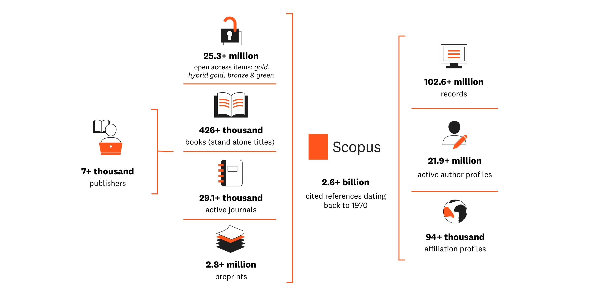

As the field of psychology progresses and integrates new, more replicable methods, findings take on an increasingly objective tone. Yet psychology is a particularly personal subject. A researcher's perspective, grounded in lived experience, guides interpretation of the behaviors they study and the work they publish.
Even the most evidence-based scientific truth is limited by study samples and the worldviews through which data is understood. The impact is amplified in psychology: results that document patterns of behavior end up defining how people are supposed to behave (Cheon et al., 2020; Nielsen et al., 2017), despite these findings emerging from limited populations studied within specific contexts (Rad et al., 2018).
Identifying who, from where, is publishing research is critical for evaluating psychological claims. One approach to reducing bias is sample diversification, but simply widening the pool cannot resolve the problem on its own: final interpretation remains with those who publish. These people often work in Western, Educated, Industrialized, Rich, and Democratic (WEIRD) countries (Henrich et al., 2010). Between 2020 and 2023, over 70 percent of psychology authors were WEIRD-affiliated (Džanko et al., 2026). Limited representation breeds homogeneity of lived experience, narrowing the questions and assumptions guiding normative frameworks.
Cross-national analyses using the National Science Foundation's publication counts documented in its Science & Engineering (NSF S&E) Indicators maps where psychology is written and how international presence is changing.
Key findings
Figures and findings cover 2011–2022 unless noted.
- Among large science producers, psychology takes up more room in WEIRD countries.
- The US writes more psychology than any other country.
- Psychology can be a small part of a country's science and still account for a large share of the world's psychology.
- Psychology's center of production is shifting away from the US and its WEIRD peers.
Among large science producers, psychology takes up more room in WEIRD countries.
Huge research systems will publish more of almost everything. Consequently, the raw count of a country's psychology publications is most useful for quantifying presence on the world stage. To contextualize that presence within a country's own research system, a better measure is the amount of psychology a country produces relative to its overall science output, termed psychology's share.
Across the fifteen largest research systems, psychology occupies more space in every WEIRD country than in any non-WEIRD one.
The largest gap in the ranking, 0.96 points, separates the lowest WEIRD country (France) from the highest non-WEIRD one (Brazil).
Every WEIRD country in the top-15 producers of science devotes at least 2.2% of its output to psychology and every non-WEIRD country devotes 1.3% or less. Countries specialize in specific fields for many reasons: large emerging economies China and India concentrate in industrially relevant areas like applied physics, while developed ones like the US and the UK tend toward broader, more distributed portfolios (Miao et al., 2022). The above ranking, however, doesn't track this pattern: developed economies like Japan and South Korea appear in the bottom half.
Wealth also naturally predicts higher publication volumes, enabling funding of more researchers with better equipment and training. Psychology's share already measures output relative to the size of a country's science sector, so a relationship between wealth and share suggests that psychology is a larger part of richer countries' research. Across nearly 200 countries, that mostly holds. Higher-income countries have higher psychology shares. Notably, this relationship only appears when comparing separate countries. Countries that grew richer between 2003 and 2022 did not measurably shift their psychology share. Whatever distinguishes research systems with larger psychology shares from those with smaller ones is more durable than transient economic change.
Yet even within this wealth pattern, some countries produce less psychology than their wealth predicts. Japan is richer than France, Italy, and Spain, and produces a little more than a third of the psychology its income predicts. Five additional standard socioeconomic and innovation indicators—tertiary enrollment, R&D spending, researchers per million, urban population, and internet users—also fail to separate these fifteen countries. The measures closest to research capacity do the worst: South Korea has more researchers per person and spends more of its economy on R&D than any other country in this group, but ranks eleventh of fifteen in psychology's share. The starkest contrast is between the UK and Japan, which produced almost the same amount of science between 2011 and 2022, with similar income levels and similar rates of tertiary enrollment. Japan had more researchers per person, yet the UK produced more than four times as much Scopus-indexed psychology.
Economic ability alone doesn't explain what divides the ranking. The difference may have more to do with how these research systems developed than with what they now have.
The US writes more psychology than any other country.
The US ranks third in psychology's share, but first in volume, writing a third of the world's psychology between 2011 and 2022 (33.8%, nearly double its 17.4% of world science). With 4.3% of the global population, that's roughly eight times its population share.
Output pools in five countries, which together wrote 58% of the field: the US, the UK, Germany, Canada, and China. Four of the five are WEIRD.
Five countries produced 58% of the world's psychology publications, ranked from highest to lowest: the US, the UK, Germany, Canada, and China.
Both ends of the scale are imbalanced. Across the twelve years, 120 countries contributed fewer than 100 psychology publications each. Together, the smaller half of countries contributed 784 publications, only 0.13% of the world total. The US alone contributed more than 201,000. Researchers consuming only English-indexed literature aren't reading a global sample of findings.
China is the only non-WEIRD country among the top five producers by volume. Unlike the other four, it ranks there despite a small psychology share.
Psychology can be a small part of a country's science and still account for a large share of the world's psychology.
China has a larger science base than the US, yet psychology makes up less than half of one percent of that output.
Canada, the UK, and Germany each produce more psychology publications than China despite producing fewer science publications overall.
China's scale gives it a large place in global psychology while psychology occupies a small place inside its own research system. India, the third-largest science producer, doesn't have that scale. It contributes under 0.3% of its output to psychology, the lowest of any large science producer, and ranks 27th in psychology volume.
Both psychology and overall publication counts here come from Scopus, so a country whose work is generally underrepresented in the index shows that underrepresentation in both. What remains is a field-specific gap: either these countries disproportionately publish psychology outside the English-language databases, or less psychology is produced. Given that China and India are Scopus's largest and third-largest science producers, their low psychology output is a departure specific to the field.
Findings about behavior are bound to the language and setting where they were produced in a way that a materials result is not. Research closely entangled with local language and culture is more likely to be published where its subjects are (Yang & Li, 2025), and the English-language requirement may hinder translation across cultural contexts.
Psychology's center of production is shifting away from the US and its WEIRD peers.
WEIRD countries wrote 90% of psychology in 2003 and two-thirds by 2022. The US drove much of the fall, dropping from 46.8% to 27.7%, with the UK's share falling from 10.9% to 6.6%. China rose from 0.7% to 11.1%, passing the UK for second in annual output in 2021, shifting roughly half the size of the WEIRD decline.
More of the world's psychology now comes from outside the countries that once dominated the field. China in particular has achieved the annual rate of the UK, Canada, and Germany.
The gap is narrowing, but slowly. In 2003, WEIRD research systems devoted more than five times as much of their science to psychology as non-WEIRD systems did. The difference grew until 2010, but by 2022 had fallen to about three and a half times.
What this all means
Psychology's contributor base is more distributed between WEIRD and non-WEIRD countries than it was twenty years ago, but what psychology says is still overwhelmingly written inside WEIRD research systems.
- Volume is diversifying. The US share of world psychology nearly halved since 2003, and China now ranks second in annual output.
- Share is diversifying, albeit slower than volume. WEIRD research systems devoted more than five times as much of their science to psychology as non-WEIRD ones in 2003; by 2022 that gap had narrowed to about three and a half times. It widened for the first seven years before it began to close.
- Resources don't explain the divide. None of six standard measures of wealth, education, or research and innovation capacity separates the two groups, and research capabilities are the least predictive.
What should be done?
Most of the world produces almost no indexed psychology at all. A more representative field will require more than redistributing attention among the researchers already visible.
Addressing WEIRD bias should also consider people outside the field. Psychology researchers are trained to read a finding alongside its sample, but most people encounter psychology without that learned intuition. Findings travel far beyond academic frameworks, reaching the public stripped of the context that qualifies them.
For the benefit of both academics and laypeople, psychology can start by being clearer about the boundaries of the knowledge produced within the field: where findings are coming from, whose work is visible, and how credit is attributed.
1. Increase cross-system collaboration
A literature review is shaped by what databases are searched. Language restrictions and indexing choices determine which research enters the evidence base in the first place.
Both within and outside the field of psychology, existing guidelines and standards for systematic review and evidence synthesis recognize language as part of methods:
- The APA's JARS (Journal Article Reporting Standards) specifies language reporting across various approaches to research in psychology (American Psychological Association, 2020).
- The Cochrane Handbook outlines best practices in psychological interventions. It states that removing language restrictions in English language databases is not a good substitute for searching non-English sources (Cochrane, 2024).
- PRISMA (Preferred Reporting Items for Systematic Reviews and Meta-Analyses) is a set of reporting guidelines. It includes language restrictions as part of eligibility criteria (Page, McKenzie, et al., 2021; Page, Moher, et al., 2021).
- In epidemiology, the MOOSE checklist for meta-analyses of observational studies has a section to describe handling of non-English articles (Stroup et al., 2000).
Reporting standards address individual researchers. Deepening collaboration between research systems creates denser networks and promotes information flow across languages and cultures. Large international networks such as the Psychological Science Accelerator demonstrate the approach in practice, and multilingual researchers are especially valuable as brokers.
2. Make author roles legible
Fractional counting credits every author equally, regardless of who oversaw the experimental direction or interpretation and presentation of findings.
Contribution taxonomies like CRediT already make roles reportable on individual papers, including conceptualization, methodology, formal analysis, supervision, and original drafting. Those roles are not available in the country-level bibliometric data used here, beyond voluntary reporting in the papers themselves. Future bibliometric work should treat author roles as a measure of representation.
3. Put it in the budget
A study of ecological systematic reviews and maps found that constrained funding and limited language diversity within review teams were major barriers to including non-English research (Hannah et al., 2024). Translation and regional-database searching should be planned as project costs rather than absorbed by multilingual team members.
Funders can support this by naming translation and multilingual evidence searching as allowable costs. Low-cost translation support already exists, but review teams must plan and fund its use from the start (Rockliffe, 2022).
Data and methods
- Publication counts are sourced from the National Science Foundation (NSF) Science & Engineering (S&E) Indicators, 2003–2022 (Table SPBS-2, all S&E articles; SPBS-15, psychology S&E articles).
- GDP per capita ($) is retrieved from the World Bank's World Development Indicator (WDI) database.
- Taiwan is not covered by World Bank data (non-UN member); population and GDP ($) are supplemented from Taiwan’s Directorate General of Budget, Accounting and Statistics (DGBAS) Macro Database, which acts as a census bureau.
- As a supplementary analysis, Poisson pseudo-maximum likelihood (PPML) models estimate annual psychology publication output with total national S&E output as an offset, log GDP per capita as a predictor, year fixed effects, and standard errors clustered by country. The model tests cross-country association.
- Full analysis, including additional regression diagnostics: notebooks/01_data_insights.ipynb.
Quantifying publication counts
Coverage
Scopus is the world's leading abstract and citation database run by Elsevier, one of the world’s largest publishers. Indexed content must be peer-reviewed and have a title and abstract available in English.

Fractional contributions
NSF aggregates fractional publication counts by country. A fractional publication count attributes credit based on the proportion of authors on a single paper affiliated with institutions in each country.
Example: If a publication has 4 authors (2 from the US, 1 from Canada, and 1 from the UK) each country receives:
- US = 0.5 (2/4)
- Canada = 0.25 (1/4)
- UK = 0.25 (1/4)
This approach better reflects the collaborative nature of modern scientific research compared to whole counting (where each country gets full credit) or first-author counting (where only one country gets credit).
Defining WEIRD Countries
Russia is coded as non-WEIRD; US-developed system justification scales fail on Russian samples without substantial rewriting (Agadullina et al., 2021).
Limitations
- Elsevier requires that work indexed by Scopus has at minimum an abstract and title in English, and cannot fully capture non-English research cultures. The complete global body of psychology research is dispersed across global and regional databases, most notably China’s National Knowledge Infrastructure (CNKI) and Russia’s Science Citation Index (RSCI). Scopus authorship patterns are best interpreted as representative of what English-speakers are engaging with.
- Institutional affiliation includes researchers imported from non-WEIRD countries. Aggregate counts may reflect globalized perspectives, particularly in highly internationalized research hubs (e.g. the US).
- Fractional counting gives equal weight all individual contributors and does not consider first/last author status. This assumes that on average, all listed authors meaningfully influence published perspectives to the same degree.
- Comparing psychology output to overall scientific output only maps the global landscape. A follow-up comparing psychology to other subjects is needed to isolate how different countries handle psychology research in particular.
Works cited
- Agadullina, E., Ivanov, A., & Sarieva, I. (2021). How do russians perceive and justify the status quo: Insights from adapting the system justification scales. Frontiers in Psychology, 12. https://doi.org/10.3389/fpsyg.2021.717838
- American Psychological Association. (2020). APA Style Journal Article Reporting Standards (JARS). https://apastyle.apa.org/jars
- Cheon, B. K., Melani, I., & Hong, Y. (2020). How USA-Centric is psychology? An archival study of implicit assumptions of generalizability of findings to human nature based on origins of study samples. Social Psychological and Personality Science, 11(7), 928–937. https://doi.org/10.1177/1948550620927269
- Cochrane. (2024). Chapter 4: Searching for and selecting studies. In Cochrane Handbook for Systematic Reviews of Interventions. https://training.cochrane.org/handbook/current/chapter-04
- Džanko, L., Cisłak, A., & Formanowicz, M. (2026). WEIRD psychological science – geographical patterns of knowledge production. Scientometrics. https://doi.org/10.1007/s11192-025-05451-7
- Hannah, K., Haddaway, N. R., Fuller, R. A., & Amano, T. (2024). Language inclusion in ecological systematic reviews and maps: Barriers and perspectives. Research Synthesis Methods. https://doi.org/10.1002/jrsm.1699
- Henrich, J., Heine, S. J., & Norenzayan, A. (2010). The weirdest people in the world? Behavioral and Brain Sciences, 33(2–3), 61–83. https://doi.org/10.1017/s0140525x0999152x
- Miao, L., Murray, D., Jung, W.-S., Larivière, V., Sugimoto, C. R., & Ahn, Y.-Y. (2022). The latent structure of global scientific development. Nature Human Behaviour, 6(9), 1206–1217. https://doi.org/10.1038/s41562-022-01367-x
- Nielsen, M., Haun, D., Kärtner, J., & Legare, C. H. (2017). The persistent sampling bias in developmental psychology: a call to action. Journal of Experimental Child Psychology, 162(1), 31–38. https://doi.org/10.1016/j.jecp.2017.04.017
- Page, M. J., McKenzie, J. E., Bossuyt, P. M., Boutron, I., Hoffmann, T. C., Mulrow, C. D., et al. (2021). The PRISMA 2020 statement: An updated guideline for reporting systematic reviews. BMJ, 372, n71. https://doi.org/10.1136/bmj.n71
- Page, M. J., Moher, D., Bossuyt, P. M., Boutron, I., Hoffmann, T. C., Mulrow, C. D., Shamseer, L., Tetzlaff, J. M., Akl, E. A., Brennan, S. E., Chou, R., Glanville, J., Grimshaw, J. M., Hróbjartsson, A., Lalu, M. M., Li, T., Loder, E. W., Mayo-Wilson, E., McDonald, S., … McKenzie, J. E. (2021). PRISMA 2020 explanation and elaboration: Updated guidance and exemplars for reporting systematic reviews. BMJ, 372, n160. https://doi.org/10.1136/bmj.n160
- Rad, M. S., Martingano, A. J., & Ginges, J. (2018). Toward a psychology of homo sapiens: Making psychological science more representative of the human population. Proceedings of the National Academy of Sciences, 115(45), 11401–11405. https://doi.org/10.1073/pnas.1721165115
- Rockliffe, L. (2022). Including non-English language articles in systematic reviews: A reflection on processes for identifying low-cost sources of translation support. Research Synthesis Methods, 13(1), 2–5. https://doi.org/10.1002/jrsm.1508
- Stroup, D. F., Berlin, J. A., Morton, S. C., Olkin, I., Williamson, G. D., Rennie, D., Moher, D., Becker, B. J., Sipe, T. A., & Thacker, S. B. (2000). Meta-analysis of observational studies in epidemiology: A proposal for reporting. JAMA, 283(15), 2008–2012. https://jamanetwork.com/journals/jama/fullarticle/192614
- Yang, L., & Li, M. (2025). Historical development and global standings: Charting the cartography of humanities and social sciences research in East Asia. Quantitative Science Studies, 6, 421–444. https://doi.org/10.1162/qss_a_00356